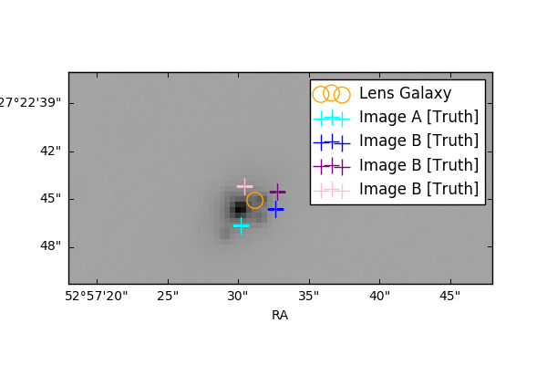
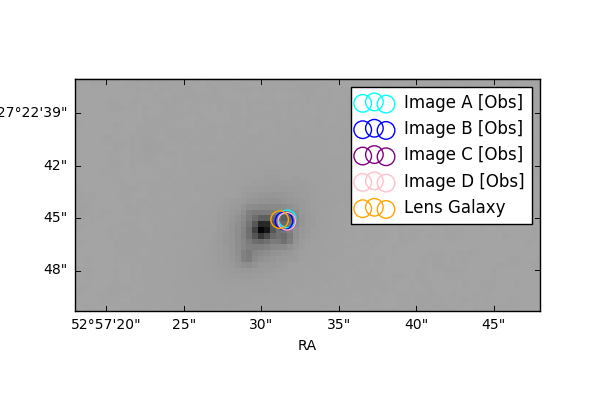
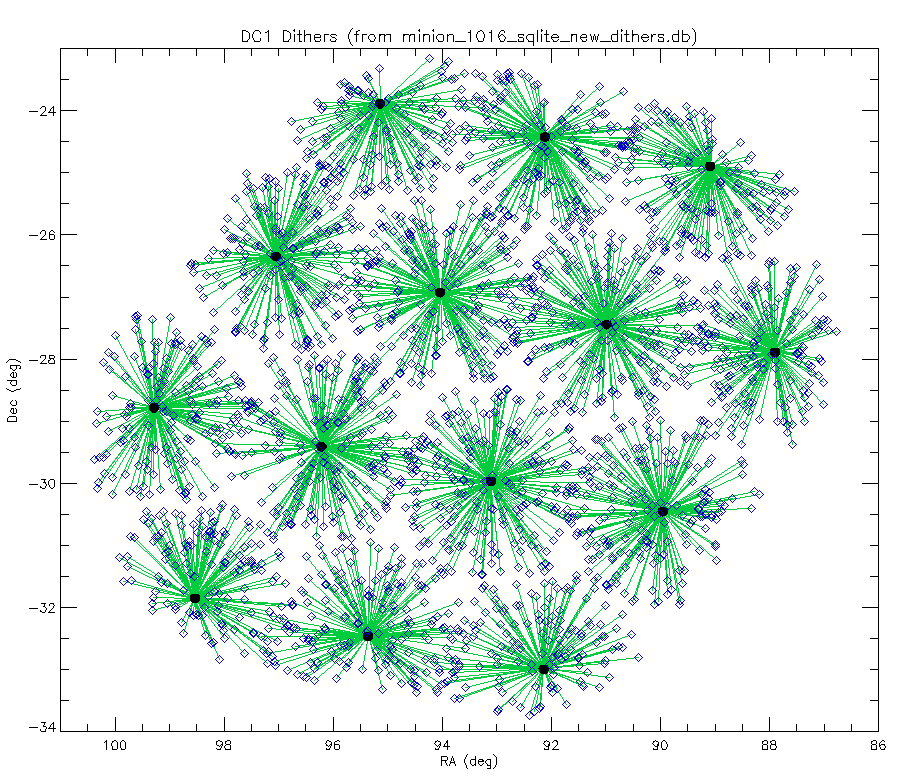

We caught up on the SL analysis work, investigating the Twinkles lens measurements and starting to think about how to interpret them. We then discussed Twinkles 2, identifying some questions (about dithering, and our place in the DC2 simulation suite) and agreeing to try to write rough abstracts for interesting science papers that we want Twinkles 2 to enable. Then, we finalized the DM pipeline design for Run 1.3, where we’d like SN host galaxy “Cmodel” size and shape measurements, and SL feature HSM moments to be measured (in both the visit and DIA images).
Phil is advising an undergrad researcher, Jenny Kim, on a small project to enable DM catalogs to be realized as Gaussian Mixture Models, so that they can be compared with strong lens models realized in the same way. This is an attempt to solve the (anticipated) problem that blended objects appear as variable multiplicity source aggregations. Basic start-up repo is here, comments/issues/pull requests welcome!
Following on from the Hack Day, Bryce identified a useful quad system to give us a better idea of what is going on with the lensed quasar DIA measurements. See the images in issue thread #424 here, reproduced below.


Two problems:
Top: the “truth” features (colored crosses) don’t line up with the coadd image (grayscale). Bryce will investigate PhoSim vs ICRS coordinate systems with Scott.
Bottom: the DIASources all land in one place, apparently where image B should be. This could be a feature not a bug: it’s possible that only image B was varying!
Bryce will investigate the Objects and ForcedSources (from the Level 2 pipeline) as well, to see what this informative quad looks like there.
Bryce will also look at the DIAimages too, to see whether it’s really the case that only image B is detectable.
The `start_paper` Makefile now enables author contribution statements, so is in better shape to hand Note creation. For the DM Pipeline Note, we’re leaning towards a top level description in Note form that introduces, explains and then links to the various Cookbook pieces. With all the linking we’ll need to do (to living files hosted on GitHub), choosing ipynb/md/rst makes most sense. Some work on the `start_paper` Makefile will be needed to do the conversions to PDF for archiving purposes (issued at start_paper/#48).
LSST DESC Notes that we have on our planning radar (titles to be edited later):
Monitor concept, design, demo? (ipynb?) - Bryce
Pserv concept, design, demo? (ipynb?) - Jim, but with Bryce & Heather documenting how to set up and use… + jupyter dev
*Twinkles 1 Overview (rst, w/ hyperlinks to other Notes) - Phil, Michael
*Twinkles 1 PhoSim Pipeline and Results (rst) - Tom
*Predicting PhoSim CPU Time (?) - Seth
*Twinkles 1 DM Pipeline and Results (rst) - Simon, Tony
*The Twinkles 1 Sky (opsim, catsim, sprinkler concept, link to sims cookbook) - Scott
*The Twinkles 1 Supernova Population (incl science motivation, ipynb) - Rahul
*The Twinkles 1 Strong Lens Population (incl science motivation, ipynb) - Bryce, Phil
To be started later (but not much later!)):
Twinkles 1 Error Model (possibly two notes, SN and SL, ipynb?) - Rahul, Bryce, Phil
Action: Phil to set up folders and branches, everyone to jump in and write...
Call for science paper “abstracts” to drive details of design. We discussed this radical concept: the idea is to try and define interesting AJ papers in advance, and then carry out the simulation that enables those papers to be written. Rahul and Phil will start a md doc to host these abstracts, which will need input from the SN and SL working groups.
Will we include realistic dithers? Aspiration shoudl be “yes”, to be consistent with our push for all-round greater realism. DC1 development means that this should be straightforward to do now. Two major consequences are:
The field will land on different chips, and usually be spread over 4 chips, in different orientations. This means we’ll be sampling the focal plane.
We’ll need to populate a larger area of sky with stars, to make sure that all the chips the field lands on will be DM-measurable.
Will we need more than one Twinkles field? Could be: especially if we need more sky area at WFD cadence. This points towards the general conversation that needs to be started, which is about how Twinkles 2 can best fit in with the rest of DC2. Should Twinkles 2 just be a small patch of sky within DC2?
Below is an illustration of the dithers that Humna defined for DC1 PhoSim Deep. The dithered pointing directions are shown connected to their nominal, non-dithered pointings. This is from the discussion in SSim issue #27. The magnitude of the dithers ranges up to half the distance between nominal pointings (i.e. 0.5 field widths, or about 1.8 degrees). The directions and magnitudes of the dithers were random (per unit solid angle) and the pointings selected from minion_1016 were only those that had at least one CCD overlap with the fields covered by the four central pointings after the dithering. That is why the displacements look smaller around the edges.

Rahul provided the Year 1 and Years 2-10 visit lists, to enable the templates and difference images to be made. Tony has been busy with other things but the pipelines are basically ready to go, except for:
Simon will push his final changes to pipeline to include Cmodel and HSM size and shape measurements. We agreed that we’d like Cmodel and HSM run on the coaddimages, and HSM on the visit images and DIAimages. These moments will give the SLRealizer something to interpret in itis GMM, and the Cmodel measurements will provide valuable SN host galaxy information.